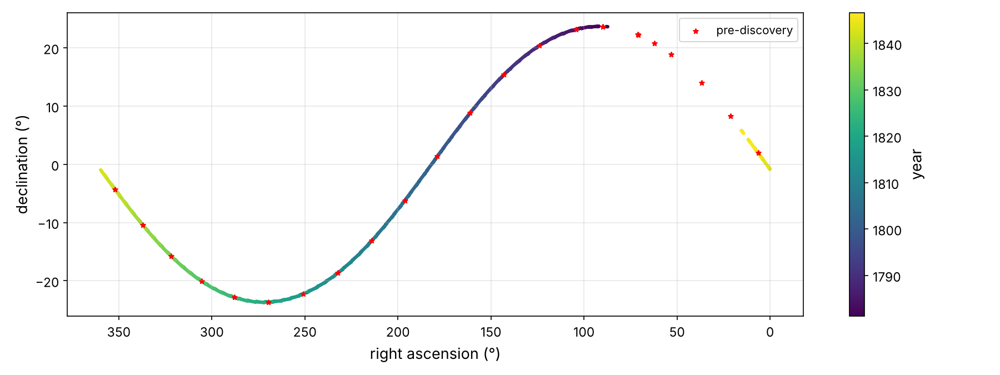
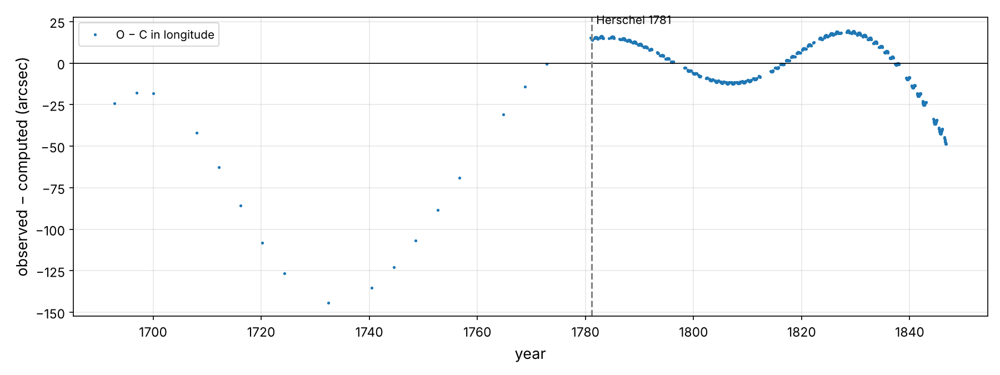
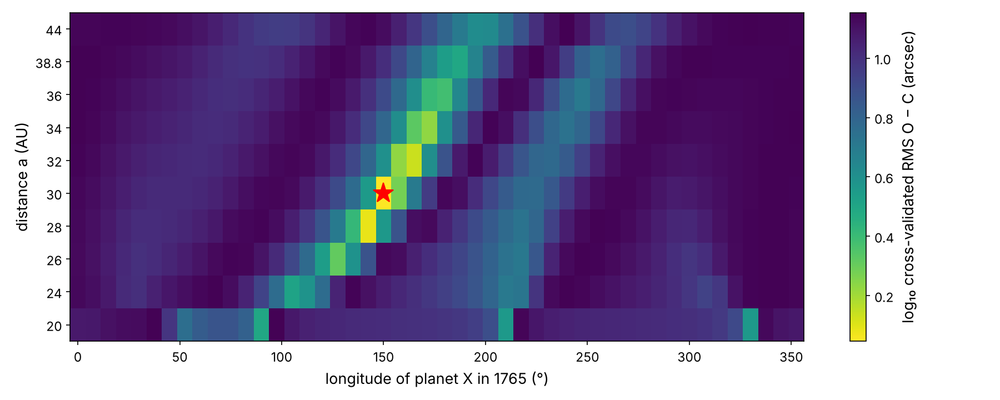
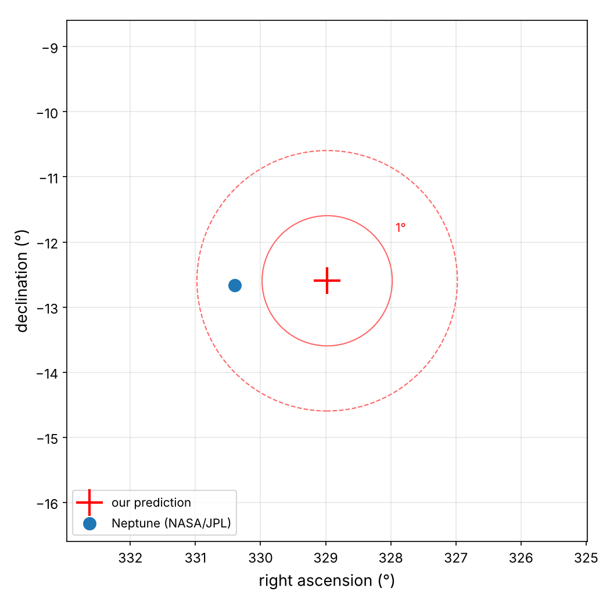

Rediscovering Neptune:
Finding a Planet in the Residuals
In this chapter you will go through a third project end to end, pretending to be a young mathematician at the Paris Observatory in the summer of 1845. The director, François Arago, has a problem for you. Uranus, the planet William Herschel discovered in 1781, refuses to follow its tables. The best astronomers in Europe have tried and failed to compute an orbit that matches all the observations. Is Newton's law of gravity wrong at that distance from the Sun? Or is something out there, something nobody has ever seen, pulling on Uranus?1 Here are the main steps you will go through:
- Look at the big picture.
- Get the data.
- Discover and visualize the data to gain insights.
- Prepare the data for Machine Learning algorithms.
- Select a model and train it.
- Fine-tune your model.
- Present your solution.
- Launch, monitor, and maintain your system.
This chapter is about one of the most important skills in data science: reading the residuals. When a good model leaves a systematic pattern in its errors, the pattern is information. Here, the information is a planet. You will build a gravity simulator, fit it to the observations like any other model, find the anomaly, and then search for the hidden cause with a grid search. Finally, you will "point the telescope" at the predicted spot on the night of 23 September 1846.
Working with Real Data
Ideally, we would use the actual telescope measurements of Uranus that Le Verrier used. These are the meridian-circle positions from Greenwich, Paris and other observatories, plus about twenty pre-discovery sightings by Flamsteed, Bradley, Mayer and Le Monnier, who recorded Uranus as a "star". Unfortunately, these have never been published as a digitized dataset: they live in 18th- and 19th-century printed volumes. So, as allowed by our data-quality ladder from Chapter 1, we fall back to the next best thing:
| Dataset | Kind | Used for |
|---|---|---|
| NASA/JPL Horizons: astrometric right ascension and declination of Uranus seen from the Earth, 1690–1846 | NASA model | the "observations" (targets) |
| NASA/JPL Horizons: heliocentric positions of the Earth, Jupiter and Saturn | NASA model | the known planets (inputs of the simulator) |
| NASA/JPL Horizons: Neptune on 23 September 1846 | NASA model | only at the very end, to check the prediction |
The JPL Horizons ephemeris (DE440/DE441) is a model of the solar system fitted to centuries of real observations, including historical ones, plus radar and spacecraft data. It contains the real motion of Uranus, including the pull of Neptune, which is exactly what makes it suitable: the signal we are looking for is in there. Its positions are far more precise than any 1840s measurement, and we'll discuss what that changes. To keep the experiment honest, we will treat Neptune's own data like a sealed envelope: the notebook downloads it only after the prediction is made.
The notebook neptune_project.ipynb runs every line of code in this chapter in under two minutes. All the data are cached in datasets/nasa/.
Look at the Big Picture
Frame the Problem
The objective is to explain the motion of Uranus, and if the explanation is a new planet, to predict where it is so that someone can look. That second part is unusual. Our real "product" is not the predictions of the model we fit, but the hidden parameters of a second model.
Let's frame it in ML terms. The first stage is supervised regression: inputs are times, targets are sky positions, and the model is a gravity simulator with six trainable parameters (the position and velocity of Uranus at one epoch). The second stage is anomaly analysis: are the residuals just noise, or do they have structure? The third stage is a kind of inverse problem, or latent-variable search. We add an unobserved planet X to the model, with its own parameters (mass, distance, position along its orbit), and search for the values that best explain the anomaly. Its distance and position are natural hyperparameters for a grid search. Everything is batch learning.
Select a Performance Measure
For each observation \(i\) we compare the observed ecliptic longitude and latitude \((\lambda_i, \beta_i)\) with the computed ones. A difference in longitude covers a smaller angle on the sky away from the ecliptic, so it is multiplied by \(\cos\beta\). We stack both components into one residual vector and use the RMSE, in arcseconds:
For scale, the meridian circles of the 1840s measured planetary positions to roughly 1–3″. The pre-discovery sightings were much worse, often 10″ or more.
Check the Assumptions
- Newton is right. This is the big one. If the data cannot be explained with Newtonian gravity plus a planet, we may have to doubt gravity itself. Remember this for the epilogue.
- The known planets are known. We take the positions of the Earth, Jupiter and Saturn as given. In 1845 they were well known from their own observations. Their masses come from their moons, with the Kepler III trick of Chapter 1.
- Planet X is simple. Following Le Verrier, we assume a circular orbit in the plane of the ecliptic. The planets known in 1845 have small eccentricities and inclinations, so this is a reasonable first model.
- Light takes time. Light from Uranus takes about 2.7 hours to reach us. During that time Uranus moves about 5″, so we compute where Uranus was when the light left it.
- The observations are noise-free. NASA's positions are much more precise than real 1840s ones. This makes our residuals cleaner than Le Verrier's. We will keep this in mind when interpreting how sure we are.
Get the Data
Same workspace as before: python3 -m pip install -U jupyter numpy pandas matplotlib scipy scikit-learn.
# Python ≥3.8 is required
import sys
assert sys.version_info >= (3, 8)
# Scikit-Learn ≥1.0 is required
import sklearn
assert sklearn.__version__ >= "1.0"
# Common imports
import os
import numpy as np
import pandas as pd
# To make this notebook's output stable across runs
np.random.seed(42)
# To plot pretty figures
import matplotlib as mpl
import matplotlib.pyplot as plt
mpl.rc('axes', labelsize=13)
mpl.rc('xtick', labelsize=11)
mpl.rc('ytick', labelsize=11)
# Where to save the figures
PROJECT_ROOT_DIR = "."
IMAGES_PATH = os.path.join(PROJECT_ROOT_DIR, "images")
os.makedirs(IMAGES_PATH, exist_ok=True)
def save_fig(fig_id, tight_layout=True, fig_extension="png", resolution=150):
path = os.path.join(IMAGES_PATH, fig_id + "." + fig_extension)
print("Saving figure", fig_id)
if tight_layout:
plt.tight_layout()
plt.savefig(path, format=fig_extension, dpi=resolution)
Download the Data
We need two kinds of Horizons tables. Vector tables give a body's position and velocity in space, relative to the Sun, in the ecliptic frame of J2000, in AU and AU/day. Observer tables give what a telescope sees: right ascension and declination as seen from the Earth's center. We also ask for the solar elongation, the angle between Uranus and the Sun on the sky:
import urllib.parse
import urllib.request
NASA_PATH = os.path.join("datasets", "nasa")
HORIZONS_API = "https://ssd.jpl.nasa.gov/api/horizons.api"
def horizons_request(**params):
base = dict(format="text", OBJ_DATA="NO", MAKE_EPHEM="YES", CSV_FORMAT="YES")
base.update({k: f"'{v}'" if k in ("COMMAND", "CENTER", "START_TIME", "STOP_TIME",
"STEP_SIZE", "QUANTITIES") else v
for k, v in params.items()})
url = HORIZONS_API + "?" + urllib.parse.urlencode(base)
text = urllib.request.urlopen(url, timeout=300).read().decode()
header = text[:text.index("$$SOE")].strip().splitlines()[-2]
body = text[text.index("$$SOE") + 5:text.index("$$EOE")].strip()
cols = [c.strip() for c in header.split(",")]
rows = [[x.strip() for x in line.split(",")] for line in body.splitlines()]
return pd.DataFrame(rows, columns=cols[:len(rows[0])])
def fetch_vectors(target, name, start="1680-01-01", stop="1850-01-01", step="4d"):
"""Heliocentric ecliptic (J2000) position and velocity, in AU and AU/day."""
os.makedirs(NASA_PATH, exist_ok=True)
path = os.path.join(NASA_PATH, f"vectors_{name}.csv")
if not os.path.exists(path):
df = horizons_request(COMMAND=target, EPHEM_TYPE="VECTORS", CENTER="500@10",
START_TIME=start, STOP_TIME=stop, STEP_SIZE=step,
VEC_TABLE="2", REF_PLANE="ECLIPTIC", OUT_UNITS="AU-D")
df = df[["JDTDB", "X", "Y", "Z", "VX", "VY", "VZ"]].astype(float)
df.columns = ["jd", "x", "y", "z", "vx", "vy", "vz"]
df.to_csv(path, index=False)
return pd.read_csv(path)
def fetch_observations(target, name, start, stop, step="5d"):
"""Astrometric RA/Dec as seen from the Earth's centre, plus the solar elongation."""
os.makedirs(NASA_PATH, exist_ok=True)
path = os.path.join(NASA_PATH, f"observer_{name}.csv")
if not os.path.exists(path):
df = horizons_request(COMMAND=target, EPHEM_TYPE="OBSERVER", CENTER="500@399",
START_TIME=start, STOP_TIME=stop, STEP_SIZE=step,
QUANTITIES="1,23", CAL_FORMAT="JD", ANG_FORMAT="DEG")
df = df[[c for c in df.columns if c.startswith(("Date", "R.A.", "DEC", "S-O-T"))]]
df.columns = ["jd", "ra", "dec", "elongation"]
df.astype(float).to_csv(path, index=False)
return pd.read_csv(path)
earth = fetch_vectors("399", "earth")
jupiter = fetch_vectors("5", "jupiter")
saturn = fetch_vectors("6", "saturn")
uranus_sky = fetch_observations("7", "uranus", "1690-01-01", "1846-09-23")
uranus_sky.head()
| jd | ra | dec | elongation | |
|---|---|---|---|---|
| 0 | 2338320.5 | 55.55516 | 19.47398 | 132.3008 |
| 1 | 2338325.5 | 55.43939 | 19.45030 | 127.0919 |
| 2 | 2338330.5 | 55.34356 | 19.43097 | 121.9031 |
| 3 | 2338335.5 | 55.26877 | 19.41625 | 116.7384 |
| 4 | 2338340.5 | 55.21582 | 19.40634 | 111.6013 |
Take a Quick Look at the Data Structure
uranus_sky.info()
<class 'pandas.DataFrame'> RangeIndex: 11449 entries, 0 to 11448 Data columns (total 4 columns): # Column Non-Null Count Dtype --- ------ -------------- ----- 0 jd 11449 non-null float64 1 ra 11449 non-null float64 2 dec 11449 non-null float64 3 elongation 11449 non-null float64 dtypes: float64(4) memory usage: 357.9 KB
That's one position every 5 days for 156 years. But nobody observes a planet in daylight, and before 1781 nobody knew Uranus was a planet. So let's sample the data the way history would have. After Herschel's discovery, we keep one position every 10 days whenever Uranus is more than 60° from the Sun. Before 1781, we keep one position near opposition every 4 years, as stand-ins for the roughly twenty pre-discovery sightings:
# Uranus can only be measured at night: keep dates with the Sun > 60° away, one every
# 10 days after Herschel's discovery (13 March 1781). Before 1781 Uranus was logged a
# few times as a "star": keep one opposition every 4 years as stand-ins for those
# pre-discovery sightings.
year = (uranus_sky["jd"] - 2451545.0) / 365.25 + 2000
modern = uranus_sky[(year >= 1781.2) & (uranus_sky["elongation"] > 60)].iloc[::2]
old = uranus_sky[(year < 1781.2) & (uranus_sky["elongation"] > 170)].copy()
old = old.groupby(np.floor(year[old.index] / 4)).head(1)
obs = pd.concat([old, modern]).sort_values("jd").reset_index(drop=True)
obs["year"] = (obs["jd"] - 2451545.0) / 365.25 + 2000
obs["era"] = np.where(obs["year"] < 1781.2, "pre-discovery", "after discovery")
obs["era"].value_counts()
era after discovery 1563 pre-discovery 24 Name: count, dtype: int64
obs.describe()
| jd | ra | dec | elongation | year | |
|---|---|---|---|---|---|
| count | 1.587000e+03 | 1587.000000 | 1587.000000 | 1587.000000 | 1587.000000 |
| mean | 2.383219e+06 | 216.599918 | -4.984284 | 119.863926 | 1812.933755 |
| std | 7.803285e+03 | 93.147158 | 15.563188 | 35.089949 | 21.364230 |
| min | 2.338636e+06 | 0.031260 | -23.706460 | 60.108500 | 1690.870637 |
| 25% | 2.377436e+06 | 149.391680 | -19.356165 | 89.015700 | 1797.099247 |
| 50% | 2.383480e+06 | 221.258170 | -8.270390 | 118.843300 | 1813.649555 |
| 75% | 2.389570e+06 | 296.434250 | 6.435560 | 149.532100 | 1830.323066 |
| max | 2.395556e+06 | 359.746000 | 23.708110 | 179.943000 | 1846.709103 |
Create a Test Set
As in Chapter 1, nearby observations are strongly correlated, so a random split would leak. We group the observations by observing season (one per year, since Uranus is at opposition once a year) and hold out 20% of the seasons:
from sklearn.model_selection import GroupShuffleSplit
obs["apparition"] = np.floor(obs["year"] - 0.3).astype(int) # one observing season per year
splitter = GroupShuffleSplit(n_splits=1, test_size=0.2, random_state=42)
train_idx, test_idx = next(splitter.split(obs, groups=obs["apparition"]))
train_set, test_set = obs.iloc[train_idx].copy(), obs.iloc[test_idx].copy()
print(len(train_set), "train,", len(test_set), "test")
print("pre-discovery points in test:", (test_set["era"] == "pre-discovery").sum())
1296 train, 291 test pre-discovery points in test: 6
Discover and Visualize the Data to Gain Insights
Visualizing the Path of Uranus
fig, ax = plt.subplots(figsize=(12, 4.5))
recent = obs[obs["year"] > 1781]
sc = ax.scatter(recent["ra"], recent["dec"], c=recent["year"], s=4, cmap="viridis")
old_pts = obs[obs["era"] == "pre-discovery"]
ax.scatter(old_pts["ra"], old_pts["dec"], c="red", s=18, marker="*", label="pre-discovery")
ax.invert_xaxis()
ax.set_xlabel("right ascension (°)"); ax.set_ylabel("declination (°)")
ax.grid(alpha=0.3); ax.legend()
plt.colorbar(sc, label="year")
save_fig("uranus_sky_path_plot")
plt.show()

Uranus takes 84 years to go around the zodiac, so over 156 years it makes almost two full turns. The sine-like shape is the ecliptic, drawn on equatorial coordinates. The yearly retrograde loops are too small to see at this scale. Nothing here looks wrong. The anomaly we're after is a few arcseconds on a path that spans 360°: a part in a million. Only a model can reveal it.
Experimenting with Attribute Combinations: Bode's Law
If there is another planet, how far is it? In 1845 astronomers had a famous rule of thumb, the Titius–Bode law: planetary distances follow \(a \approx 0.4 + 0.3 \times 2^n\) AU, with \(n = -\infty, 0, 1, 2, \ldots\). It had "predicted" Uranus (\(n = 6\), 19.6 AU) and the asteroid Ceres (\(n = 3\)). Let's test it with a linear regression on a well-chosen attribute combination, \(\log_2((a - 0.4)/0.3)\) against \(n\):
# Semi-major axes known in 1845 (modern values, AU), with Titius-Bode index n
bode = pd.DataFrame({"a_AU": [0.387, 0.723, 1.000, 1.524, 2.77, 5.203, 9.537, 19.19],
"n": [-np.inf, 0, 1, 2, 3, 4, 5, 6]},
index=["Mercury", "Venus", "Earth", "Mars", "Ceres", "Jupiter",
"Saturn", "Uranus"])
bode["bode_rule"] = 0.4 + 0.3 * 2.0 ** bode["n"]
bode
| a_AU | n | bode_rule | |
|---|---|---|---|
| Mercury | 0.387 | -inf | 0.4 |
| Venus | 0.723 | 0.0 | 0.7 |
| Earth | 1.000 | 1.0 | 1.0 |
| Mars | 1.524 | 2.0 | 1.6 |
| Ceres | 2.770 | 3.0 | 2.8 |
| Jupiter | 5.203 | 4.0 | 5.2 |
| Saturn | 9.537 | 5.0 | 10.0 |
| Uranus | 19.190 | 6.0 | 19.6 |
from sklearn.linear_model import LinearRegression
fit_rows = bode[np.isfinite(bode["n"])]
X_bode = fit_rows[["n"]].values
y_bode = np.log2((fit_rows["a_AU"].values - 0.4) / 0.3) # attribute combination
bode_reg = LinearRegression().fit(X_bode, y_bode)
n_next = 7
a_next = 0.4 + 0.3 * 2 ** bode_reg.predict([[n_next]])[0]
print(f"slope = {bode_reg.coef_[0]:.3f}, predicted distance of the next planet: {a_next:.1f} AU")
slope = 0.984, predicted distance of the next planet: 36.7 AU
The slope is almost exactly 1, so the "law" fits beautifully, and it predicts the next planet at about 37–39 AU. Le Verrier and his English rival John Couch Adams both started from a distance like this. Keep this number in mind: we will soon see whether the data agree.
A pattern that fits 7 points with a 2-parameter formula is not necessarily a law of nature. Bode's law has no physical basis, and it fails for Neptune (and for Pluto). This is a historical case of overfitting a pattern and extrapolating it. We will let it set a starting point, not the answer.
Prepare the Data for Machine Learning Algorithms
Our simulator works in the ecliptic frame, so let's convert the targets from equatorial RA/Dec to ecliptic longitude and latitude. That is a rotation by the obliquity ε about the x axis (the inverse of Equation 1-1):
EPS_J2000 = np.radians(23.4392911) # obliquity of the ecliptic at J2000
def radec_to_ecliptic(ra_deg, dec_deg):
"""Equatorial (ICRF) RA/Dec -> ecliptic longitude and latitude (radians)."""
ra, dec = np.radians(ra_deg), np.radians(dec_deg)
x = np.cos(dec) * np.cos(ra)
y = np.cos(dec) * np.sin(ra)
z = np.sin(dec)
c, s = np.cos(EPS_J2000), np.sin(EPS_J2000)
ye, ze = c * y + s * z, -s * y + c * z # rotate about the x axis
return np.arctan2(ye, x) % (2 * np.pi), np.arcsin(ze)
obs["lon"], obs["lat"] = radec_to_ecliptic(obs["ra"], obs["dec"])
train_set = obs.iloc[train_idx].copy()
test_set = obs.iloc[test_idx].copy()
obs[["year", "ra", "dec", "lon", "lat"]].head(3)
| year | ra | dec | lon | lat | |
|---|---|---|---|---|---|
| 0 | 1690.870637 | 62.04035 | 20.80414 | 1.117110 | -0.002574 |
| 1 | 1692.896646 | 71.04406 | 22.26945 | 1.265462 | -0.000453 |
| 2 | 1696.948665 | 89.85770 | 23.66057 | 1.568521 | 0.003863 |
The simulator also needs the positions of the Earth, Jupiter and Saturn at any time, not just every 4 days, because the integrator chooses its own time steps. Cubic splines interpolate them smoothly and accurately:
from scipy.interpolate import CubicSpline
def spline(vec):
return CubicSpline(vec["jd"].values, vec[["x", "y", "z"]].values)
earth_pos, jupiter_pos, saturn_pos = spline(earth), spline(jupiter), spline(saturn)
earth_pos(2451545.0) # where the Earth was on 1 Jan 2000 (AU)
array([ 1.47009600e+08, 1.93792894e+07, -6.60154786e+05])
Select and Train a Model
A Model That Simulates Gravity
Here is the heart of the chapter: Equation 3-1 as code, a numerical integrator (SciPy's solve_ivp with the high-order DOP853 method), and the conversion from a simulated position to what an observer on Earth would measure, including the light-time correction:
from scipy.integrate import solve_ivp
K2 = 0.01720209895 ** 2 # G * M_sun in AU³/day² (Gauss's constant squared)
M_JUPITER = 1 / 1047.348644 # masses in solar masses: known in 1845 from their moons
M_SATURN = 1 / 3497.9018
M_URANUS = 1 / 22902.98
LIGHT_DAYS_PER_AU = 0.0057755183
T_EPOCH = 2366000.5 # 1765: the middle of the data
def acceleration(t, r, perturbers):
"""Heliocentric acceleration of Uranus: the Sun + each perturber (direct and
indirect terms: the perturber also pulls the Sun, our moving origin)."""
acc = -K2 * (1 + M_URANUS) * r / np.linalg.norm(r) ** 3
for position, mass in perturbers:
p = position(t)
d = p - r
acc += K2 * mass * (d / np.linalg.norm(d) ** 3 - p / np.linalg.norm(p) ** 3)
return acc
def integrate_orbit(state0, perturbers, t_min, t_max):
"""Integrate Uranus forward and backward from the epoch; returns a function of time."""
rhs = lambda t, y: np.r_[y[3:], acceleration(t, y[:3], perturbers)]
opts = dict(method="DOP853", rtol=1e-10, atol=1e-12, dense_output=True)
fwd = solve_ivp(rhs, (T_EPOCH, t_max + 5), state0, **opts)
bwd = solve_ivp(rhs, (T_EPOCH, t_min - 5), state0, **opts)
def state(t):
t = np.atleast_1d(t)
out = np.empty((6, len(t)))
after = t >= T_EPOCH
if after.any():
out[:, after] = fwd.sol(t[after])
if (~after).any():
out[:, ~after] = bwd.sol(t[~after])
return out
return state
def predict_sky(state0, perturbers, jd):
"""Geocentric ecliptic longitude/latitude of Uranus (with light-time correction)."""
s = integrate_orbit(state0, perturbers, jd.min(), jd.max())(jd)
g = s[:3] - earth_pos(jd).T # Earth -> Uranus
g = g - s[3:] * np.linalg.norm(g, axis=0) * LIGHT_DAYS_PER_AU # where it WAS
return np.arctan2(g[1], g[0]) % (2 * np.pi), np.arctan2(g[2], np.hypot(g[0], g[1]))
def o_minus_c(state0, perturbers, data):
"""'Observed minus computed' in arcseconds: on-sky longitude, latitude."""
lon, lat = predict_sky(state0, perturbers, data["jd"].values)
dlon = np.angle(np.exp(1j * (data["lon"].values - lon))) * np.cos(data["lat"].values)
return np.r_[dlon, data["lat"].values - lat] * 206265
The integrator starts from a state vector (3 positions and 3 velocities) at the epoch 1765. It runs forward to 1846 and backward to 1690. Those six numbers are our model's parameters. To start the optimizer somewhere sensible, we use Kepler's third law: an 84-year period means a distance of \(84^{2/3} \approx 19.2\) AU. We place Uranus on a circular orbit at the longitude where it was seen at the opposition nearest to 1765:
# A rough starting guess: a circular orbit, in the ecliptic, at Kepler's distance for an
# 84-year period, at the longitude where Uranus was seen at the opposition nearest 1765.
a0 = (84.0 ** 2) ** (1 / 3) # Kepler III, AU
near = obs.loc[(obs["jd"] - T_EPOCH).abs().idxmin()]
L0 = near["lon"]
v0 = np.sqrt(K2 / a0)
state_guess = np.array([a0 * np.cos(L0), a0 * np.sin(L0), 0.0,
-v0 * np.sin(L0), v0 * np.cos(L0), 0.0])
print(f"a ≈ {a0:.2f} AU, starting longitude {np.degrees(L0):.1f}°")
a ≈ 19.18 AU, starting longitude 22.7°
And as usual we wrap it in a Scikit-Learn estimator. The perturbers hyperparameter selects which planets pull on Uranus. fit() minimizes the O − C with least_squares(), and score() returns minus the RMS:
from sklearn.base import BaseEstimator, RegressorMixin
from scipy.optimize import least_squares
STATE_SCALE = np.r_[np.full(3, 1e-3), np.full(3, 1e-6)] # AU and AU/day
class UranusOrbitRegressor(BaseEstimator, RegressorMixin):
"""Fits the position and velocity of Uranus in 1765 so that the simulated planet,
pulled by the Sun and the given perturbers, matches the observed sky positions."""
def __init__(self, perturbers="sun", init=None):
self.perturbers = perturbers # 'sun' or 'sun+jupiter+saturn'
self.init = init
def _bodies(self):
if self.perturbers == "sun":
return []
return [(jupiter_pos, M_JUPITER), (saturn_pos, M_SATURN)]
def fit(self, X, y=None):
start = state_guess if self.init is None else self.init
res = least_squares(o_minus_c, start, args=(self._bodies(), X),
x_scale=STATE_SCALE, diff_step=1e-7)
self.state_ = res.x
return self
def residuals(self, X):
return o_minus_c(self.state_, self._bodies(), X)
def score(self, X, y=None):
return -np.sqrt(np.mean(self.residuals(X) ** 2)) # minus RMS O-C (arcsec)
Training and Evaluating on the Training Set
First, the simplest model, Uranus pulled by the Sun alone:
sun_only = UranusOrbitRegressor("sun").fit(train_set)
print(f"Sun only: RMS O-C = {-sun_only.score(train_set):.1f} arcsec")
Sun only: RMS O-C = 31.2 arcsec
An RMS of 31″ is far worse than the observations' precision. The model underfits: it is missing physics. Let's add Jupiter and Saturn, as Bouvard did, starting from the Sun-only solution:
bouvard = UranusOrbitRegressor("sun+jupiter+saturn", init=sun_only.state_).fit(train_set)
r = bouvard.residuals(train_set)
print(f"Sun + Jupiter + Saturn: RMS O-C = {-bouvard.score(train_set):.1f} arcsec, "
f"max = {np.abs(r).max():.1f} arcsec")
Sun + Jupiter + Saturn: RMS O-C = 12.4 arcsec, max = 144.1 arcsec
The RMS drops to about 12″, but the worst residual is 144″, almost two and a half arcminutes. That's much too big. Still, the orbit itself is sensible:
def orbital_elements(state):
"""Semi-major axis, eccentricity, inclination from a heliocentric state vector."""
r, v = state[:3], state[3:]
mu = K2 * (1 + M_URANUS)
a = 1 / (2 / np.linalg.norm(r) - v @ v / mu)
h = np.cross(r, v)
e = np.linalg.norm(np.cross(v, h) / mu - r / np.linalg.norm(r))
inc = np.degrees(np.arccos(h[2] / np.linalg.norm(h)))
return pd.Series({"a (AU)": a, "e": e, "i (deg)": inc,
"period (yr)": 2 * np.pi / np.sqrt(mu / a**3) / 365.25})
orbital_elements(bouvard.state_).round(4)
a (AU) 19.2184 e 0.0471 i (deg) 0.7792 period (yr) 84.2511 dtype: float64
A semi-major axis of 19.2 AU, an eccentricity of 0.047, an 84-year period: these are the textbook values for Uranus.
Better Evaluation Using Cross-Validation
from sklearn.model_selection import GroupKFold
def cross_val_rms(make_model, data, n_splits=5):
scores = []
for tr, va in GroupKFold(n_splits).split(data, groups=data["apparition"]):
model = make_model().fit(data.iloc[tr])
scores.append(-model.score(data.iloc[va]))
return np.array(scores)
def display_scores(scores):
print("Scores:", scores.round(2))
print("Mean:", scores.mean().round(3), " Standard deviation:", scores.std().round(3))
for name, make in [("Sun only", lambda: UranusOrbitRegressor("sun", init=sun_only.state_)),
("Sun + Jupiter + Saturn",
lambda: UranusOrbitRegressor("sun+jupiter+saturn", init=bouvard.state_))]:
print("---", name, "---"); display_scores(cross_val_rms(make, train_set))
--- Sun only --- Scores: [36.76 30.26 33.11 29.86 32.36] Mean: 32.469 Standard deviation: 2.471 --- Sun + Jupiter + Saturn --- Scores: [10.46 8.72 15.45 17.88 15.92] Mean: 13.687 Standard deviation: 3.485
Cross-validation confirms it: adding Jupiter and Saturn helps a lot, but the error on unseen seasons stays at about 14″, ten times larger than what good observations would allow. Something is still missing.
The Anomaly
Whenever a model plateaus, do what you should always do: look at the residuals (Figure 3-2).
def plot_o_minus_c(data, resid, ax, label, **kw):
n = len(data)
ax.plot(data["year"], resid[:n], ".", ms=3, label=label, **kw)
fig, ax = plt.subplots(figsize=(12, 4.5))
plot_o_minus_c(train_set, bouvard.residuals(train_set), ax, "O − C in longitude")
ax.axhline(0, color="k", lw=0.8)
ax.axvline(1781.2, color="gray", ls="--"); ax.text(1782, ax.get_ylim()[1] * 0.85, "Herschel 1781")
ax.set_xlabel("year"); ax.set_ylabel("observed − computed (arcsec)")
ax.grid(alpha=0.3); ax.legend()
save_fig("uranus_o_minus_c_plot")
plt.show()

This is not noise. Noise would scatter randomly around zero. These residuals form smooth, slow waves:
- The pre-discovery positions (left) fall up to 2.4′ behind the model. That is Bouvard's problem: no orbit fits both the old and new observations. He decided the old ones must be wrong and threw them away.
- After 1781, the residuals oscillate with an amplitude of about 20″. Uranus first runs ahead of the model, then falls behind after the 1820s. By 1846 it drifts quickly away.
Bouvard's decision is a classic data science mistake: he removed the data that disagreed with his model and called them outliers. Before dropping "bad" data, ask whether a better model could explain them. Outliers that are smooth in time, and consistent across independent observers, are rarely errors.
What could cause such a pattern? A planet pulls hardest when it is closest. Picture an outer planet X, moving more slowly than Uranus on a larger orbit. Before Uranus catches up with it, X pulls Uranus forward, so Uranus runs ahead. After Uranus passes it, X pulls it back. The turnaround in the residuals in the 1820s suggests that Uranus overtook X around then. That is a first rough fix on where X must be.
Fine-Tune Your Model: Searching for Planet X
Now we add a third perturber with unknown properties. Following Le Verrier, X has a circular orbit in the ecliptic, so it has three unknowns: its distance \(a\), its longitude \(\lambda_0\) at the epoch, and its mass \(m\). The speed of X follows from Kepler's third law. We also have to re-fit the six parameters of Uranus, since a new perturber changes the best orbit. That's nine parameters in a very non-linear model, with many local minima. How do we search efficiently?
A Linear Model of the Unknown
Here is the trick, and Le Verrier used a version of it. The perturbations are tiny, so the residuals respond linearly to small changes. A small nudge to the starting state of Uranus changes the O − C by an amount proportional to the nudge. We compute these six "nudge" responses once, by finite differences, as the columns of a Jacobian matrix:
# Linearize around Bouvard's solution: how does O-C change if we nudge Uranus's state?
base_resid = bouvard.residuals(obs)
steps = np.r_[np.full(3, 1e-5), np.full(3, 1e-8)]
jacobian = np.column_stack([
(o_minus_c(bouvard.state_ + np.eye(6)[k] * steps[k], bouvard._bodies(), obs) - base_resid) / steps[k]
for k in range(6)])
jacobian.shape
(3174, 6)
And for a given \(a\) and \(\lambda_0\), the pull of planet X is proportional to its mass. We simulate X once with a small probe mass. The resulting change in O − C, divided by that mass, is the planet's "signature": one new feature column. The model is now linear in its 7 unknowns (6 nudges and the mass), so ordinary linear regression solves it exactly, in a millisecond:
This is pure feature engineering. The physics goes into the features. Let's write a Scikit-Learn transformer that produces them for given \(a\) and \(\lambda_0\), with a cache so each candidate planet is simulated only once:
from sklearn.base import TransformerMixin
M_PROBE = 1e-4 # a probe mass (solar masses): the response is ~linear in mass
_x_cache = {}
def planet_x_position(a, lon0):
"""Circular orbit in the ecliptic (Le Verrier's assumption), Kepler III for the speed."""
n = np.sqrt(K2 / a ** 3)
return lambda t: np.array([a * np.cos(lon0 + n * (t - T_EPOCH)),
a * np.sin(lon0 + n * (t - T_EPOCH)), 0.0])
def planet_x_signature(a, lon0_deg):
"""Change in O-C (per solar mass of planet X) for every observation."""
key = (round(a, 3), round(lon0_deg, 3))
if key not in _x_cache:
bodies = bouvard._bodies() + [(planet_x_position(a, np.radians(lon0_deg)), M_PROBE)]
_x_cache[key] = (o_minus_c(bouvard.state_, bodies, obs) - base_resid) / M_PROBE
return _x_cache[key]
class PlanetXFeatures(BaseEstimator, TransformerMixin):
"""Rows = measured numbers (index into the stacked O-C vector).
Features = 6 'nudge Uranus' columns + 1 'planet X at (a, lon0)' column."""
def __init__(self, a=36.0, lon0=0.0):
self.a = a
self.lon0 = lon0
def fit(self, X, y=None):
return self
def __sklearn_is_fitted__(self):
return True
def transform(self, X):
rows = np.asarray(X).ravel().astype(int)
return np.c_[jacobian[rows], planet_x_signature(self.a, self.lon0)[rows]]
Each observation gives two numbers (longitude and latitude O − C), so we stack them. Each row of X is just an index into the stacked vector, and the target is the part of the residual that the corrections must explain:
# Each observation gives two numbers (longitude and latitude O-C).
n_obs = len(obs)
rows_of = lambda idx: np.r_[idx, idx + n_obs]
X_train_rows = rows_of(train_idx).reshape(-1, 1)
y_train = -base_resid[X_train_rows.ravel()] # what the corrections must explain
groups_train = np.r_[obs["apparition"].values[train_idx]] .tolist() * 2
X_train_rows.shape, y_train.shape
((2592, 1), (2592,))
Now we can chain the transformer and a linear regression in a pipeline, exactly like a preprocessing pipeline followed by a predictor:
from sklearn.pipeline import Pipeline
planet_x_model = Pipeline([
("planet_x", PlanetXFeatures()),
("lin_reg", LinearRegression(fit_intercept=False)),
])
def rms_score(estimator, X, y):
return -np.sqrt(np.mean((estimator.predict(X) - y) ** 2))
Grid Search
The distance and longitude of planet X are hyperparameters of the planet_x step, so GridSearchCV can explore them, with grouped cross-validation, just like any preprocessing option. The double-underscore syntax (planet_x__a) reaches inside the pipeline. We try 10 distances, including Bode's 38.8 AU, and 48 longitudes, for 480 candidate planets:
from sklearn.model_selection import GridSearchCV
param_grid = {"planet_x__a": [20.0, 24.0, 26.0, 28.0, 30.0, 32.0, 34.0, 36.0, 38.8, 44.0],
"planet_x__lon0": list(np.arange(0.0, 360.0, 7.5))}
grid_search = GridSearchCV(planet_x_model, param_grid, cv=GroupKFold(5),
scoring=rms_score, n_jobs=1)
grid_search.fit(X_train_rows, y_train, groups=groups_train)
grid_search.best_params_
{'planet_x__a': 30.0, 'planet_x__lon0': np.float64(150.0)}
The best candidate lies at 30 AU. Let's visualize the whole search (Figure 3-3):
res = pd.DataFrame(grid_search.cv_results_["params"])
res["rms"] = -grid_search.cv_results_["mean_test_score"]
table = res.pivot(index="planet_x__a", columns="planet_x__lon0", values="rms")
fig, ax = plt.subplots(figsize=(12, 4.8))
im = ax.imshow(np.log10(table.values), aspect="auto", origin="lower", cmap="viridis_r",
extent=[-3.75, 356.25, -0.5, len(table) - 0.5])
ax.set_yticks(range(len(table)), [f"{a:g}" for a in table.index])
ax.set_xlabel("longitude of planet X in 1765 (°)"); ax.set_ylabel("distance a (AU)")
best = grid_search.best_params_
ax.plot(best["planet_x__lon0"], list(table.index).index(best["planet_x__a"]), "r*", ms=18)
plt.colorbar(im, label="log₁₀ cross-validated RMS O − C (arcsec)")
save_fig("planet_x_grid_search_plot")
plt.show()

The map has a clear yellow ridge. For each distance, only a narrow range of longitudes works, and the ridge bends: a more distant planet has to be placed further along. This is a degeneracy, like the mass–distance degeneracy of Chapter 2. A farther, heavier planet can produce a similar pull to a closer, lighter one, as long as it passes Uranus at the same time. But the ridge is not flat, and it has a minimum. Let's look at the best longitude for each distance, with its fitted mass:
best_lon = table.idxmin(axis=1)
summary = pd.DataFrame({"best lon0": best_lon, "CV RMS (arcsec)": table.min(axis=1)})
mass = []
for a, lon in best_lon.items():
model = Pipeline([("planet_x", PlanetXFeatures(a, lon)),
("lin_reg", LinearRegression(fit_intercept=False))]).fit(X_train_rows, y_train)
mass.append(model.named_steps["lin_reg"].coef_[-1])
summary["mass (M_sun)"] = mass
summary.round(6)
| best lon0 | CV RMS (arcsec) | mass (M_sun) | |
|---|---|---|---|
| planet_x__a | |||
| 20.0 | 90.0 | 3.133968 | 0.000076 |
| 24.0 | 105.0 | 3.236599 | 0.000007 |
| 26.0 | 127.5 | 2.065724 | 0.000017 |
| 28.0 | 142.5 | 1.211502 | 0.000031 |
| 30.0 | 150.0 | 1.114820 | 0.000047 |
| 32.0 | 165.0 | 1.365740 | 0.000075 |
| 34.0 | 172.5 | 1.703193 | 0.000104 |
| 36.0 | 180.0 | 2.402134 | 0.000139 |
| 38.8 | 187.5 | 3.129870 | 0.000195 |
| 44.0 | 195.0 | 4.143225 | 0.000332 |
The cross-validated error is smallest at 30 AU (1.1″), and it gets much worse at Bode's 38.8 AU (3.1″). The data overrule the prior. The fitted mass also changes along the ridge, from about 6 Earth masses at 26 AU to more than 100 at 44 AU. Le Verrier, who assumed about 36 AU, found a planet that was too far and too massive, but in the right direction. You'll see why that is enough.
Analyze the Best Models and Their Errors
The linear model was an approximation. Let's refit the full non-linear simulator at the best distance, starting from the linear solution, with all eight remaining parameters free:
# Final model: full non-linear fit (no linearization) of Uranus's state and planet X's
# mass and longitude, at the best distance found by the grid search.
A_X = best["planet_x__a"]
def full_residuals(q, data):
state, m, lon0 = q[:6], q[6] * 1e-5, np.radians(q[7])
bodies = bouvard._bodies() + [(planet_x_position(A_X, lon0), m)]
return o_minus_c(state, bodies, data)
lin = Pipeline([("planet_x", PlanetXFeatures(A_X, best["planet_x__lon0"])),
("lin_reg", LinearRegression(fit_intercept=False))]).fit(X_train_rows, y_train)
q0 = np.r_[bouvard.state_ + lin.named_steps["lin_reg"].coef_[:6],
lin.named_steps["lin_reg"].coef_[6] * 1e5, best["planet_x__lon0"]]
final = least_squares(full_residuals, q0, args=(train_set,),
x_scale=np.r_[STATE_SCALE, 1.0, 1.0], diff_step=np.r_[np.full(6, 1e-7), 1e-3, 1e-4])
x_mass, x_lon0 = final.x[6] * 1e-5, final.x[7] % 360
print(f"planet X: a = {A_X} AU, mass = {x_mass:.3g} M_sun ({x_mass * 332946:.1f} Earth masses), "
f"longitude in 1765 = {x_lon0:.1f}°")
print(f"training RMS O-C: {np.sqrt(np.mean(final.fun ** 2)):.2f} arcsec "
f"(was {-bouvard.score(train_set):.1f} without planet X)")
planet X: a = 30.0 AU, mass = 4.84e-05 M_sun (16.1 Earth masses), longitude in 1765 = 152.7° training RMS O-C: 0.54 arcsec (was 12.4 without planet X)
The RMS drops from 12.4″ to about half an arcsecond. Planet X has about 16 Earth masses. Let's compare the residuals with and without it (Figure 3-4):
fig, axes = plt.subplots(2, 1, figsize=(12, 7), sharex=True)
r_before = bouvard.residuals(obs)
r_after = full_residuals(final.x, obs)
for ax, r, title in [(axes[0], r_before, "Sun + Jupiter + Saturn"),
(axes[1], r_after, f"… + planet X at {A_X:g} AU")]:
ax.plot(obs["year"], r[:n_obs], ".", ms=3, label="longitude")
ax.plot(obs["year"], r[n_obs:], ".", ms=3, label="latitude")
ax.axhline(0, color="k", lw=0.8); ax.set_title(title)
ax.set_ylabel("O − C (arcsec)"); ax.grid(alpha=0.3); ax.legend(loc="upper left")
axes[1].set_xlabel("year")
save_fig("o_minus_c_before_after_plot")
plt.show()

The two-arcminute waves are gone. What remains is about one arcsecond of smooth structure, mostly in latitude. Our planet X lies exactly in the ecliptic and on a circle, while the real one is tilted by about 1.8° and slightly eccentric. With 1840s observations, which had errors of one to a few arcseconds, those leftovers would be invisible.
Evaluate Your System on the Test Set
rms_before = np.sqrt(np.mean(bouvard.residuals(test_set) ** 2))
rms_after = np.sqrt(np.mean(full_residuals(final.x, test_set) ** 2))
print(f"test RMS O-C without planet X: {rms_before:.2f} arcsec")
print(f"test RMS O-C with planet X: {rms_after:.2f} arcsec")
test RMS O-C without planet X: 12.81 arcsec test RMS O-C with planet X: 0.56 arcsec
On the held-out seasons, adding planet X cuts the error by a factor of more than 20. It generalizes. We are ready to tell the world.
Present Your Solution
Your report to the Academy: the motion of Uranus, including the pre-discovery positions that Bouvard rejected, is explained to the precision of the observations by Newtonian gravity plus one more planet. That planet has about 16 Earth masses and orbits at about 30 AU, much closer than Bode's law suggested. The data do not pin down the distance perfectly (Figure 3-3), but they do pin down where in the sky the planet is now.
That last point deserves a moment. In 1846 the planet had passed Uranus only about 25 years earlier. Every candidate on the ridge of Figure 3-3 was constrained to be near the same place at the time of that closest approach, so they all point to roughly the same part of the sky in the 1840s, even though their distances differ. The direction of a planet near its closest approach is the best-determined quantity in the whole problem. That is why Le Verrier could be quite wrong about the distance and still right about where to look.
Launch: Point the Telescope
On 18 September 1846, Le Verrier wrote to Johann Galle at the Berlin Observatory with his prediction. Galle received the letter on the 23rd and looked that same night, with the student Heinrich d'Arrest, who suggested comparing the field with a new star chart. Let's make our own prediction for that night:
JD_GALLE = 2395197.5 # 23 September 1846, the night of the discovery
def geocentric_radec(helio_xyz, jd):
g = helio_xyz - earth_pos(jd)
c, s = np.cos(EPS_J2000), np.sin(EPS_J2000)
x, y, z = g[0], c * g[1] - s * g[2], s * g[1] + c * g[2] # ecliptic -> equatorial
return np.degrees(np.arctan2(y, x)) % 360, np.degrees(np.arcsin(z / np.linalg.norm(g)))
x_pos_1846 = planet_x_position(A_X, np.radians(x_lon0))(JD_GALLE)
pred_ra, pred_dec = geocentric_radec(x_pos_1846, JD_GALLE)
print(f"predicted position of planet X on 1846-09-23: RA = {pred_ra:.2f}°, Dec = {pred_dec:.2f}°")
print(f"heliocentric longitude: {np.degrees(np.arctan2(x_pos_1846[1], x_pos_1846[0])) % 360:.2f}°")
predicted position of planet X on 1846-09-23: RA = 328.98°, Dec = -12.60° heliocentric longitude: 327.86°
Now, and only now, let's open the sealed envelope and ask NASA where Neptune really was:
neptune_sky = fetch_observations("8", "neptune_1846", "1846-09-23", "1846-09-24", "1d")
nep_ra, nep_dec = neptune_sky.loc[0, ["ra", "dec"]]
cos_sep = (np.sin(np.radians(pred_dec)) * np.sin(np.radians(nep_dec)) +
np.cos(np.radians(pred_dec)) * np.cos(np.radians(nep_dec)) *
np.cos(np.radians(pred_ra - nep_ra)))
separation = np.degrees(np.arccos(cos_sep))
print(f"Neptune (NASA/JPL) on 1846-09-23: RA = {nep_ra:.2f}°, Dec = {nep_dec:.2f}°")
print(f"distance between our prediction and Neptune: {separation:.2f}°")
Neptune (NASA/JPL) on 1846-09-23: RA = 330.40°, Dec = -12.67° distance between our prediction and Neptune: 1.39°
fig, ax = plt.subplots(figsize=(7, 7))
ax.plot(pred_ra, pred_dec, "r+", ms=22, mew=2, label="our prediction")
ax.plot(nep_ra, nep_dec, "o", color="tab:blue", ms=10, label="Neptune (NASA/JPL)")
for radius, ls in [(1, "-"), (2, "--")]:
circle = plt.Circle((pred_ra, pred_dec), radius, fill=False, ls=ls, color="r", alpha=0.6)
ax.add_patch(circle)
ax.text(pred_ra - 1.05, pred_dec + 0.75, "1°", color="r")
ax.set_xlim(pred_ra + 4, pred_ra - 4); ax.set_ylim(pred_dec - 4, pred_dec + 4)
ax.set_aspect("equal"); ax.grid(alpha=0.3); ax.legend(loc="lower left")
ax.set_xlabel("right ascension (°)"); ax.set_ylabel("declination (°)")
save_fig("galle_search_plot")
plt.show()

Our prediction lands about 1.4° from Neptune, less than three widths of the full Moon, in a sky that is 360° around. A telescope sweeping that region with a good star chart would find a "star" not on the chart within a night. That's exactly what happened in Berlin: Galle and d'Arrest found Neptune within an hour, about 1° from Le Verrier's predicted position. Here is how our planet X compares with the real Neptune:
neptune_vec = fetch_vectors("8", "neptune")
nep_xyz = spline(neptune_vec)(JD_GALLE)
true_lon = np.degrees(np.arctan2(nep_xyz[1], nep_xyz[0])) % 360
pd.DataFrame({"our planet X": [A_X, x_mass, np.degrees(np.arctan2(x_pos_1846[1], x_pos_1846[0])) % 360],
"Neptune (NASA)": [np.linalg.norm(nep_xyz), 1 / 19412.26, true_lon]},
index=["distance in 1846 (AU)", "mass (M_sun)", "heliocentric longitude 1846 (°)"]).round(6)
| our planet X | Neptune (NASA) | |
|---|---|---|
| distance in 1846 (AU) | 30.000000 | 30.023592 |
| mass (M_sun) | 0.000048 | 0.000052 |
| heliocentric longitude 1846 (°) | 327.858903 | 326.904688 |
Our distance (30 AU) and our heliocentric longitude (within about 1°) are excellent, and the mass is within 6% of Neptune's. That is the best our model class can do. It has one more advantage than Le Verrier had: noise-free data. Le Verrier's own distance was too large (by about 20%) and his mass too high, because the 1840s observations could not resolve the degeneracy that Figure 3-3 shows. His direction was still right.
Monitor and Maintain
A model in production must be watched, and the story of planet hunting is full of lessons about it:
- Concept drift, Newton edition. Le Verrier immediately applied the same method to Mercury, whose perihelion advanced 43″ per century more than Newton predicted. He proposed a planet "Vulcan" inside Mercury's orbit. It was never found. The residual was real, but the cause was not a missing input: the model class was wrong. In 1915, Einstein's general relativity explained exactly 43″ per century. Sometimes the fix for structured residuals is a hidden variable (Neptune). Sometimes it is a new theory (relativity). You saw the same thing with S2 in Chapter 2.
- Overfitting the residuals. Around 1900, Percival Lowell analyzed the small residuals that remained in the motion of Uranus and predicted a "Planet X" beyond Neptune. Pluto was found in 1930 near his predicted position, but it was a coincidence: Pluto is far too light to perturb Uranus. The residuals came from a slightly wrong mass for Neptune, fixed when Voyager 2 flew by in 1989. When you fit a model to residuals that are at the level of the noise and the systematics, you will find a "signal" whether or not one exists.
- The search continues. Today, astronomers look for a hypothetical "Planet Nine" from the clustering of the orbits of distant trans-Neptunian objects. It's the same kind of inference, with the same risks and the same rewards.
Try It Out!
The animation below runs on the simulated orbits and fitted parameters of this chapter. Watch Neptune pull Uranus ahead and then hold it back, with the residual curve drawn in real time. Click any cell of the grid search to see where that candidate planet would have been in 1846. Then relive the night of 23 September 1846 at the eyepiece. Full screen: animations/neptune_animation.html.
Exercises
- Add Gaussian noise of 2″ to the post-1781 positions and 15″ to the pre-discovery ones (a realistic 1840s situation), weight the residuals accordingly, and redo the grid search. How wide does the ridge in Figure 3-3 become? How far off is the prediction for 1846?
- Remove the pre-discovery positions, as Bouvard did. Can the grid search still find the planet? Compare the maps. (Hint: with only 65 years of data, distance, mass and longitude trade off against each other almost perfectly.)
- Give planet X an eccentricity and a perihelion longitude, and fit them in the non-linear refinement. Does the distance move toward 30.1 AU?
- Use only the data up to 1840 and predict Neptune's position for 1846. How much does the early warning cost in accuracy?
- Repeat the whole project for Neptune, using Horizons data from 1846 to 1930, and look for "Planet X" in its residuals. What do you find, and what does that teach you about Lowell's search?
- Replace the grid search with
RandomizedSearchCVover continuous distributions forplanet_x__aandplanet_x__lon0. How many iterations do you need to find the ridge?
1 Urbain Le Verrier (1811–1877) did exactly this, starting in the summer of 1845 at Arago's suggestion. He presented his prediction to the French Academy of Sciences on 31 August 1846. John Couch Adams in Cambridge had independently computed a similar prediction, but no search was organized in time.
Data credits. NASA/JPL Horizons (Jet Propulsion Laboratory, California Institute of Technology), planetary ephemeris DE440/DE441. Planetary masses: IAU/JPL values.